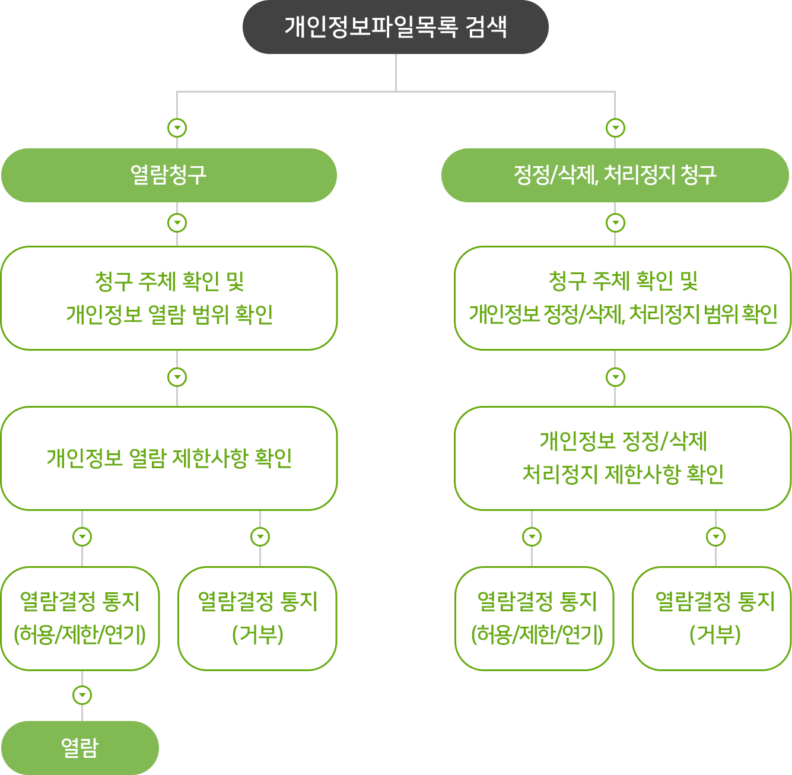

-
제1조 목적
서비스 이용약관은 "농업회사법인 세종로컬푸드 주식회사(이하 "세종로컬푸드“)가 제공하는 여러 인터넷 관련 서비스(이하 "서비스")를 귀하가 이용함에 있어 세종로컬푸드와 귀하 간의 권리, 의무 및 책임사항을 규정함을 목적으로 합니다.
-
제2조 이용자의 정의
- ① "이용자"란 "싱싱장터 앱"에 접속하여 본 약관에 따라 회원으로 가입하여 "세종로컬푸드(주)가 제공하는 서비스를 받는 자를 말합니다.
-
제3조 회원 가입
- ① 이용자가 되고자 하는 자는 "세종로컬푸드(주)가 정한 가입 양식에 따라 회원의 정보를 기입하고 휴대폰으로 본인확인을 하는 방법으로 회원 가입을 신청합니다.
-
② "세종로컬푸드(주)는 제1항과 같이 회원으로 가입할 것을 신청한 자가 다음 각 호에 해당하지 않는 한 신청한 자를 회원으로 등록합니다.
- • 등록 내용에 허위, 기재누락, 오기가 있는 경우
- • 기타 회원으로 등록하는 것이 "세종로컬푸드(주)의 운영상 현저한 지장이 있다고 판단되는 경우
- ③ 회원가입의 성립 시기는 회원가입이 완료되는 시점으로 하며, 로컬푸드 매장의 회원이 싱싱장터 앱에 가입하는 경우 적립포인트 및 구매 내역을 공유합니다.
- ④ 회원은 제1항의 회원정보 기재 내용에 변경이 발생한 경우, 즉시 변경사항을 정정하여야 합니다.
-
제4조 회원 탈퇴 및 자격 상실
- ① 이용자는 "세종로컬푸드(주)에 언제든지 자신의 회원 자격을 말소해 줄 것(회원 탈퇴)을 요청할 수 있으며 "세종로컬푸드(주)는 위 요청을 받은 즉시 해당 이용자의 회원 등록 말소를 위한 절차를 진행합니다.
-
② 이용자가 다음 각 호의 사유에 해당하는 경우, "세종로컬푸드(주)는 이용자의 회원자격을 적절한 방법으로 제한 및 정지, 상실시킬 수 있습니다.
- • 가입 신청 시에 허위 내용을 등록한 경우
- • 다른 사람의 "서비스" 이용을 방해하거나 그 정보를 도용하는 등 전자거래질서를 위협하는 경우
- • "서비스"를 이용하여 법령과 본 약관이 금지하거나 반하는 행위를 하는 경우
- ③ "세종로컬푸드(주)가 이용자의 회원자격을 상실시키기로 결정한 경우에는 회원등록을 취소합니다. 이 경우 이용자인 회원에게 회원등록 취소 전에 이를 통지합니다.
-
제5조(회원의 ID 및 비밀번호에 대한 의무)
- ① 제18조의 경우를 제외한 ID와 비밀번호에 관한 관리책임은 회원에게 있습니다.
- ② 회원은 자신의 ID 및 비밀번호를 제3자에게 이용하게 해서는 안됩니다.
- ③ 회원이 자신의 ID 및 비밀번호를 도난당하거나 제3자가 사용하고 있음을 인지한 경우에는 바로 "세종로컬푸드(주)에 통보하고 "세종로컬푸드(주)의 안내가 있는 경우에는 그에 따라야 합니다.
-
제6조 서비스의 제공 및 변경
-
① "세종로컬푸드(주)는 이용자에게 아래와 같은 서비스를 제공합니다.
- • 개인의 포인트 및 구매내역 조회, 상품평 등록, 식재료 검색, 농가의 판매내역, 생산자 및 농산물 정보 등
- ② "세종로컬푸드(주)는 그 변경될 서비스의 내용 및 제공일자를 제7조에서 정한 방법으로 이용자에게 통지하고, 제1항에 정한 서비스를 변경하여 제공할 수 있습니다.
-
① "세종로컬푸드(주)는 이용자에게 아래와 같은 서비스를 제공합니다.
-
제7조 서비스의 중단
- ① "세종로컬푸드(주)는 컴퓨터 등 정보통신설비의 보수점검·교체 및 고장, 통신의 두절 등의 사유가 발생한 경우에는 서비스의 제공을 일시적으로 중단할 수 있고, 새로운 서비스로의 교체 기타 "세종로컬푸드(주)가 적절하다고 판단하는 사유에 기하여 현재 제공되는 서비스를 완전히 중단할 수 있습니다.
- ② 제1항에 의한 서비스 중단의 경우에는 "세종로컬푸드(주)는 제7조 제2항에서 정한 방법으로 이용자에게 통지합니다. 다만, "세종로컬푸드(주)가 통제할 수 없는 사유로 인한 서비스의 중단(시스템 관리자의 고의, 과실이 없는 디스크 장애, 시스템 다운 등)으로 인하여 사전 통지가 불가능한 경우에는 그러하지 아니합니다.
-
제8조 이용자에 대한 통지
- ① "세종로컬푸드(주)"가 특정 이용자에 대한 통지를 하는 경우 회원가입 시 제공한 메일주소 또는 문자메시지로 공지 할 수 있습니다.
- ② "세종로컬푸드(주)는 불특정다수 이용자에 대한 통지를 하는 경우 5일 이상 "세종로컬푸드(주) 공지사항에 게시함으로써 개별 통지에 갈음할 수 있습니다.
-
제9조(포인트제도 등의 운영)
"세종로컬푸드(주)는 이용자에게 포인트 또는 쿠폰(이하 “적립금 등”이라 합니다)을 부여할 수 있고, 포인트 등의 부여 및 사용 등과 관련한 사항은 이 약관 또는 "세종로컬푸드(주)의 운영정책이 정한 바에 따릅니다.
-
① 적립금 등은 "세종로컬푸드(주)가 운영하는 다른 서비스에서 재화 등 구매 시 현금가액과 동일하게 사용할 수 있으나(단, 적립금 사용이 불가하다고 사전 고지한 품목은 제외됩니다), 현금으로 교환할 수 없습니다.
- • 세종로컬푸드 직매장 이용금액의 0.5%를 포인트로 적립합니다. 현금결재시 0.5%, 카드결재 및 현금영수증 발급시 0.2% 적립
- • 포인트가 1,000점 이상일 경우 현금과 같이 사용할 수 있으며, 사용금액 만큼 포인트는 차감됩니다.
- ② 이용자는 적립금 등 부여일로부터 24개월 이내에 그 적립금 등을 사용하여야 합니다. 단, 적립금 등 부여시 적립금 등 사용기간에 대해 별도의 사전 고지 또는 특약이 있는 경우에는 그 사용기간 이내에 사용하여야 합니다. 적립금 등은 부여된 순서로 사용되며, 부여일로부터 24개월 이후 잔여 적립금이 있는 경우 그 적립금은 자동적으로 소멸됩니다.
-
① 적립금 등은 "세종로컬푸드(주)가 운영하는 다른 서비스에서 재화 등 구매 시 현금가액과 동일하게 사용할 수 있으나(단, 적립금 사용이 불가하다고 사전 고지한 품목은 제외됩니다), 현금으로 교환할 수 없습니다.
-
제10조 이용자 개인정보보호
"세종로컬푸드(주)는 관련법령이 정하는 바에 따라서 이용자 등록정보를 포함한 이용자의 개인정보를 보호하기 위하여 노력합니다. 이용자의 개인정보보호에 관해서는 관련법령 및 "세종로컬푸드(주)가 정하는 "개인정보보호정책"에 정한 바에 의합니다.
-
제11조 "세종로컬푸드(주)의 의무
- ① "세종로컬푸드(주)는 법령과 본 약관이 금지하거나 약관에 반하는 행위를 하지 않으며 본 약관이 정하는 바에 따라 지속적이고, 안정적으로 서비스를 제공하기 위해서 노력합니다.
- ② "세종로컬푸드(주)는 이용자가 안전하게 인터넷 서비스를 이용할 수 있도록 이용자의 개인정보(신용정보 포함)보호를 위한 보안 시스템을 구축합니다.
- ③ "세종로컬푸드(주)는 이용자가 원하지 않는 영리목적의 광고성 전자우편을 발송하지 않습니다.
-
제12조 이용자의 ID 및 비밀번호에 대한 의무
- ① "세종로컬푸드(주)가 관계법령, "개인정보보호정책"에 의해서 그 책임을 지는 경우를 제외하고, 자신의 ID와 비밀번호에 관한 관리책임은 각 이용자에게 있습니다.
- ② 이용자는 자신의 ID 및 비밀번호를 제3자에게 이용하게 해서는 안됩니다.
- ③ 이용자는 자신의 ID 및 비밀번호를 도난당하거나 제3자가 사용하고 있음을 인지한 경우에는 바로 "세종로컬푸드(주)에 통보하고 "세종로컬푸드(주)의 안내가 있는 경우에는 그에 따라야 합니다.
-
제13조 이용자의 의무
-
① 이용자는 다음 각 호의 행위를 하여서는 안됩니다.
- • 회원가입신청 또는 변경시 허위내용을 등록하는 행위
- • "세종로컬푸드(주)에 게시된 정보를 변경하는 행위
- • "세종로컬푸드(주) 기타 제3자의 인격권 또는 지적재산권을 침해하거나 업무를 방해하는 행위
- • 다른 회원의 ID를 도용하는 행위
- • 정크메일, 스팸메일, 행운의 편지, 피라미드 조직에 가입할 것을 권유하는 메일, 외설 또는 폭력적인 메시지 ·화상·음성 등이 담긴 메일을 보내거나 기타 공서양속에 반하는 정보를 공개 또는 게시하는 행위.
- • 관련 법령에 의하여 그 전송 또는 게시가 금지되는 정보(컴퓨터 프로그램 등)의 전송 또는 게시하는 행위
- • 컴퓨터 소프트웨어, 하드웨어, 전기통신 장비의 정상적인 가동을 방해, 파괴할 목적으로 고안된 소프트웨어 바이러스, 기타 다른 컴퓨터 코드, 파일, 프로그램을 포함하고 있는 자료를 게시하는 행위
- • 스토킹 등 다른 이용자를 괴롭히는 행위
- • 제3자의 저작권 등 지적재산권을 침해하는 행위
- • 기타 제3자의 명예를 손상시키거나 "세종로컬푸드(주)"의 업무를 방해하는 행위
- • 다른 이용자에 대한 개인정보를 그 동의 없이 수집, 저장, 공개하는 행위
- • 불특정 다수의 자를 대상으로 하여 광고 또는 선전을 게시하거나 스팸메일을 전송하는 등의 방법으로 " 세종로컬푸드(주)"의 서비스를 이용하여 영리목적의 활동을 하는 행위
- • "세종로컬푸드(주)"가 제공하는 서비스에 정한 약관 기타 서비스 이용에 관한 규정을 위반하는 행위
- ② 제1항에 해당하는 행위를 한 이용자가 있을 경우 "세종로컬푸드(주)는 본 약관 제4조 제2, 3항에서 정한 바에 따라 이용자의 회원자격을 적절한 방법으로 제한 및 정지, 상실시킬 수 있습니다.
- ③ 이용자는 그 귀책사유로 인하여 "세종로컬푸드(주)나 다른 이용자가 입은 손해를 배상할 책임이 있습니다.
-
① 이용자는 다음 각 호의 행위를 하여서는 안됩니다.
-
제14조 공개게시물의 삭제
이용자의 공개게시물의 내용이 다음 각 호에 해당하는 경우 "세종로컬푸드(주)"는 관련 법령에 따라 이용자에게 사전 통지 없이 해당 공개게시물을 삭제할 수 있고, 해당 이용자의 회원 자격을 제한, 정지 또는 상실시킬 수 있습니다.
- • 다른 이용자 또는 제3자를 비방하거나 중상 모략으로 명예를 손상시키는 내용
- • 공서양속에 위반되는 내용의 정보, 문장, 도형 등을 유포하는 내용
- • 범죄행위와 관련이 있다고 판단되는 내용
- • 다른 이용자 또는 제3자의 저작권 등 기타 권리를 침해하는 내용
- • 기타 관계 법령에 위배된다고 판단되는 내용
-
제15조 저작권 및 이용제한
- ① "세종로컬푸드(주)가 작성한 저작물에 대한 저작권 기타 지적재산권은 "세종로컬푸드(주)에 귀속합니다.
- ② 이용자는 "세종로컬푸드 서비스"를 이용함으로써 얻은 정보를 "세종로컬푸드(주)의 사전승낙 없이 복제, 전송, 출판, 배포, 방송 기타 방법에 의하여 영리목적으로 이용하거나 제3자에게 이용하게 하여서는 안됩니다.
-
제16조 약관의 개정
- ① "세종로컬푸드(주)는 약관의규제등에관한법률, 전자거래기본법, 전자서명법, 정보통신망이용촉진등에관한법률 등 관련법을 위배하지 않는 범위에서 본 약관을 개정할 수 있습니다.
- ② "세종로컬푸드(주)"가 본 약관을 개정할 경우에는 적용일자 및 개정사유를 명시하여 현행약관과 함께 초기화면에 그 적용일자 일주일 이전부터 적용일자 전일까지 공지합니다.
- ③ "이용자"는 변경된 약관에 대해 거부할 권리가 있습니다. "이용자"는 변경된 약관이 공지된 후 십오(15)일 이내에 거부의사를 표명할 수 있습니다. "이용자"가 거부하는 경우 "세종로컬푸드(주)는 당해 "이용자"와의 회원 계약을 해지할 수 있습니다. 만약 "이용자"가 변경된 약관이 공지된 후 한달 이내에 거부의사를 표시하지 않는 경우에는 동의하는 것으로 간주합니다.
-
시행부칙
본 약관은 2018년 1월 1일부터 적용합니다.
농업회사법인 농업회사법인 세종로컬푸드 주식회사는 개인정보보호법 등 관련 법령상의 개인정보보호 규정을 준수하여 정보주체의 개인정보 보호 및 권익을 보호하고, 개인정보와 관련하여 이용자의 고충을 신속하고 원활하게 처리할 수 있도록 다음과 같은 개인정보 처리방침을 두고 있습니다. 이 방침은 별도의 설명이 없는 한 세종특별자치시에서 처리하는 모든 개인정보파일에 적용됩니다.
제1조. 개인정보의 처리목적, 처리 및 보유기간, 처리항목농업회사법인 농업회사법인 세종로컬푸드 주식회사가 ｢개인정보보호법｣ 제32조에 따라 등록·공개하는 개인정보파일의 처리목적 및 보유기간, 처리하는 개인정보 항목의 조회 방법은 다음과 같습니다.
개인정보파일 목록검색 바로가기개인정보보호종합지원포털(http://www.privacy.go.kr) → 개인정보민원 → 개인정보 열람등 요구 → 개인정보파일 목록 검색 → 기관명에 “세종특별자치시” 입력 → 검색
제2조. 개인정보의 제3자 제공농업회사법인 농업회사법인 세종로컬푸드 주식회사가 ｢개인정보보호법｣ 제32조에 따라 등록·공개하는 개인정보파일의 처리목적 및 보유기간, 처리하는 개인정보 항목의 조회 방법은 다음과 같습니다.
- ① 농업회사법인 농업회사법인 세종로컬푸드 주식회사는 다음과 같이 개인정보를 목적 외 이용 및 제3자에게 제공하고 있습니다.
- ② 농업회사법인 농업회사법인 세종로컬푸드 주식회사는 정보주체의 개인정보를 수집·이용 목적으로 명시한 범위 내에서 처리하며, 다음 각 호의 경우를 제외하고는 정보주체의 사전 동의 없이는 본래의 목적 범위를 초과하여 처리하거나 제3자에게 제공하지 않습니다.
※ “정보주체”란 처리되는 정보에 의하여 알아볼 수 있는 사람으로서 그 정보의 주체가 되는 사람을 말한다.
- 1. 정보주체로부터 별도의 동의를 받는 경우
- 2. 법률에 특별한 규정이 있는 경우
- 3. 정보주체 또는 법정대리인이 의사표시를 할 수 없는 상태에 있거나, 주소불명 등으로 사전 동의를 받을 수 없는 경우로서, 명백히 정보주체 또는 제3자의 급박한 생명, 신체, 재산의 이익을 위하여 필요하다고 인정되는 경우
- 4. 통계작성 및 학술연구 등의 목적을 위하여 필요한 경우로서, 특정 개인을 알아 볼 수 없는 형태로 개인정보를 제공하는 경우
- 5. 개인정보를 목적 외의 용도로 이용하거나, 이를 제3자에게 제공하지 아니하면 다른 법률에서 정하는 소관 업무를 수행할 수 없는 경우로서, 보호위원회의 심의·의결을 거친 경우
- 6. 조약, 그 밖의 국제협정의 이행을 위하여 외국정보 또는 국제기구에 제공하기 위하여 필요한 경우
- 7. 범죄의 수사와 공소의 제기 및 유지를 위하여 필요한 경우
- 8. 법원의 재판업무 수행을 위하여 필요한 경우
- 9. 형 및 감호, 보호처분의 집행을 위하여 필요한 경우
-
① 농업회사법인 세종로컬푸드 주식회사는 원활한 개인정보 업무처리를 위하여 다음과 같이 개인정보 처리업무를 위탁하고 있습니다.
연번 개인정보파일명
(위탁업무)위탁목적
(업무내용)위탁항목
(범위)수탁기관 위탁기간 1 싱싱장터 앱
운영 관리앱 회원가입
처리 및 관리,
포인트 관리 등출생년도, 성명,
주소, 전화번호재단법인
행복ICT‘18.1.1~ - ② 농업회사법인 세종로컬푸드 주식회사는 위탁계약 체결시 개인정보보호법 제26조에 따라 위탁업무 수행 목적 외 개인정보의 처리 금지, 개인정보의 관리적·기술적 보호조치, 재위탁 제한, 수탁자에 대한 관리·감독, 손해배상 등 책임에 관한 사항을 계약서에 명시하고, 수탁자가 개인정보를 안전하게 처리하는지를 감독하고 있습니다.
-
① 정보주체(만14세 미만인 경우에는 법정대리인을 말함)는 언제든지 다음 각 호의 개인정보보호 관련 권리를 행사할 수 있습니다.
- 1. 개인정보 열람요구
- 2. 오류 등이 있을 경우 정정 요구
- 3. 삭제요구
- 4. 처리정지 요구
- ② 제1항에 따른 권리 행사는 개인정보보호법 시행규칙 [별지 제8호 서식]에 따라 작성 후 서면, 전자우편, 모사전송(FAX) 등을 통하여 세종특별자치시(해당부서)로 요구하실 수 있으며, 농업회사법인 세종로컬푸드 주식회사에서는 10일 이내에 조치를 통지하겠습니다.
- ③ 정보주체가 개인정보의 오류 등에 대한 정정 또는 삭제를 요구한 경우에는 정정 또는 삭제를 완료할 때까지 당해 개인정보를 이용하거나 제공하지 않습니다.
- ④ 제1항에 따른 권리 행사는 정보주체의 법정대리인이나 위임을 받은 자 등 대리인을 통하여 하실 수 있습니다. 이 경우 개인정보보호법 시행규칙 [별지 제11호 서식]에 따른 위임장을 제출하셔야 합니다.
- ⑤ 개인정보 열람 및 처리정지 요구는 개인정보보호법 제35조 제5항, 제37조 제2항에 의하여 정보주체의 권리가 제한 될 수 있습니다.
- ⑥ 개인정보의 정정 및 삭제 요구는 다른 법령에서 그 개인정보가 수집 대상 으로 명시되어 있는 경우에는 그 삭제를 요구할 수 없습니다.
- ⑦ 정보주체 권리에 따른 열람의 요구, 정정·삭제의 요구, 처리정지의 요구 시 열람 등 요구를 한 자가 본인이거나 정당한 대리인인지를 확인합니다.
-
➇ 개인정보 열람, 정정·삭제, 처리정지 청구는 아래와 같은 절차로 처리됩니다.

-
➈ 개인정보 열람 등 요구방법 개인정보보호 종합지원 포털(www.privacy.go.kr)을 통해 “온라인 신청” 또는 세종특별자치시청(해당부서)을 통해 “오프라인 신청”하실 수 있습니다.
개인정보 열람 등 요구방법
온라인(인터넷) 오프라인(서면) - 1) 개인정보보호 종합지원포털(www.privacy.go.kr) 에 접속
- 2) 개인정보민원 >개인정보열람 등 요구안내 > [개인정보 열람 등 청구] 클릭
- 3) I-PIN인증으로 본인 확인
- 4) [개인정보파일 목록검색]을 통한 대상기관 선택
- 5) 신청유형 선택 (개인정보 열람, 정정·삭제, 처리정지 중 택 1)
- 6) 요구서 작성 후 민원청구
- 1) [개인정보 열람 요구서]를 작성하여 세종특별자치시청(해당 부서)에 제출
- - 신청서 작성시, 열람하고자 하는 개인정보파일명과 처리부서명을 확인하여 기재
- 2) 청구주체 확인을 위하여 주민등록증·운전면허증·여권 등의 신분증명서를 제시하여야 함
- ※ 만일, 대리인을 통하여 신청할 경우에는 [위임장]을 제출해야 함
- ➉ 정보주체 권리 행사에 대해 거절 등의 조치에 불복이 있는 경우에는 거절 등의 통지서를 받은 날로부터 30일 이내에 이의신청을 할 수 있으며, 통지서 내의 이의제기방법에 따라 제출하여야 합니다.
농업회사법인 세종로컬푸드 주식회사는 원칙적으로 개인정보의 보유기간이 경과했거나 처리목적이 달성된 경우에는 지체없이 해당 개인정보를 파기합니다. 다만, 다른 법령에 따라 보존하여야 하는 경우에는 그러하지 않을 수 있습니다. 파기의 절차, 기한 및 방법은 다음과 같습니다.
- 1. 파기절차 : 보유기간이 경과했거나 처리목적이 달성된 후 내부방침 및 관련 법령에 따라 파기합니다.
- 2. 파기기한 : 개인정보의 보유기간이 경과된 경우 보유기간의 종료일로부터 5일 이내에, 개인정보의 처리 목적 달성 등 그 개인정보가 불필요하게 되었을 때에는 개인정보의 처리가 불필요한 것으로 인정되는 날로부터 5일 이내에 그 개인정보를 파기합니다.
- 3. 파기방법 : 세종특별자치시에서 처리하는 개인정보를 파기할 때에는 다음의 방법으로 파기합니다. 전자적 파일 형태인 경우 : 복원이 불가능한 방법으로 영구 삭제
- 전자적 파일의 형태 외의 기록물, 인쇄물, 서면, 그 밖의 기록매체인 경우 : 파쇄 또는 소각
농업회사법인 세종로컬푸드 주식회사는 개인정보의 안전성 확보를 위해 다음과 같은 조치를 취하고 있습니다.
- 1. 개인정보 취급자의 최소화 및 교육 개인정보 취급자는 필요한 인원에 한하여 지정·관리하고 있으며, 취급자를 대상으로 안전한 관리를 위한 교육을 실시하고 있습니다.
- 2. 개인정보에 대한 접근 제한 개인정보를 처리하는 개인정보처리시스템에 대한 접근통제를 위한 필요한 조치를 하고 있으며, 침입차단시스템을 이용하여 외부로부터의 무단접근을 통제하고 있습니다.
- 3. 접속기록의 보관 개인정보를 처리하는 개인정보처리시스템에 접속한 기록을 최소 6개월 이상 보관·관리하고 있습니다.
- 4. 개인정보의 암호화 개인정보는 암호화 등을 통해 안전하게 저장 및 관리되고 있습니다. 또한 중요한 데이터는 저장 및 전송 시 암호화하여 사용하는 등의 별도 보안기능을 사용하고 있습니다.
- 5. 보안장비 설치 및 주기적 점검·갱신 해킹이나 컴퓨터 바이러스 등에 의한 개인정보 유출 및 훼손을 막기 위하여 보안장비를 설치하고 주기적으로 갱신·점검하고 있습니다.
- 6. 비인가자에 대한 출입 통제 개인정보를 보관하고 있는 개인정보처리시스템의 물리적 보관 장소를 별도로 두고 이에 대해 출입통제 절차를 수립·운영하고 있습니다.
농업회사법인 세종로컬푸드 주식회사는 개인정보의 안전성 확보를 위해 다음과 같은 조치를 취하고 있습니다.
-
① 정보주체는 농업회사법인 세종로컬푸드 주식회사 자체적인 개인정보 불만처리, 피해구제 결과에 만족 하지 못하거나, 보다 자세한 도움이 필요할 경우, 아래의 기관에 대해 개인정보 침해에 대한 피해구제, 상담 등을 문의하실 수 있습니다.
- 1. 개인정보 침해신고센터 : (국번없이) 118 (privacy.kisa.or.kr)
- 2. 개인정보 분쟁조정위원회 : 1833-6972 (www.kopico.go.kr)
- 3. 대검찰청 사이버수사과 : (국번없이) 1301 (www.spo.go.kr)
- 4. 경찰청 사이버안전국 : (국번없이) 182 (cyberbureau.police.go.kr)
- ② 또한, 개인정보의 열람, 정정·삭제, 처리정지 등에 대한 정보주체자의 요구에 대하여 공공기관의 장이 행한 처분 또는 부작위로 인하여 권리 또는 이익을 침해 받은 자는 행정심판법이 정하는 바에 따라 행정심판을 청구할 수 있습니다. 중앙행정심판위원회: (국번없이) 110 (www.simpan.go.kr)
농업회사법인 세종로컬푸드 주식회사는 개인정보 처리에 관한 업무를 총괄해서 책임지고, 개인정보 처리와 관련한 정보주체의 불만처리 및 피해구제 등을 위하여 아래와 같이 개인정보 보호책임자를 지정하고 있습니다.
-
1.개인정보보호책임자
- 가. 성 명 : 최무락
- 나. 직 책 : 대표이사
- 다. 연락처 : 044-866-4909
-
2.개인정보 보호 담당부서
- 가. 부서명 : 농업회사법인 세종로컬푸드 주식회사
- 나. 담당자 : 윤희정
- 다. 연락처 : 044-866-4904
- 라. 메 일 : sjlocal2515@naver.com
- 마. 팩 스 : 044-866-4906
이 개인정보 처리방침은 2018. 1. 1.부터 적용됩니다.